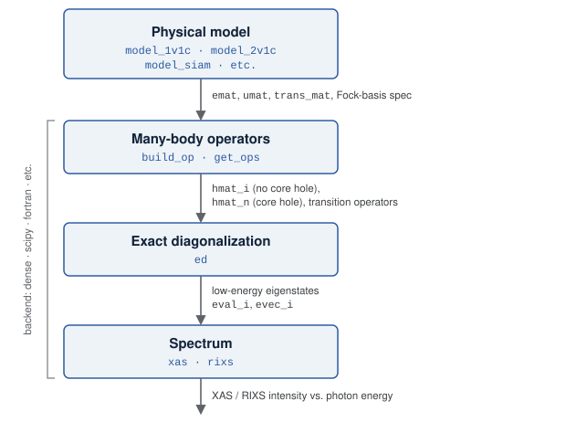

Introduction to EDRIXS
EDRIXS computes X-ray absorption (XAS) and resonant inelastic X-ray scattering (RIXS) spectra by exact diagonalization (ED) of model Hamiltonians for correlated electrons.
Every calculation follows the same path, with the following four stages:
Defining the physical model – constructing the single-particle matrices of the Hamiltonian, the Fock basis, and the transition operators for the excitations.
Building the many-body operators – expressing those Hamiltonians and transition operators in the full Fock basis.
Using exact diagonalization to obtain the low-energy eigenvalues and eigenstates of the Hamiltonians.
Constructing the spectrum from the transition operators, eigenvalues and eigenvectors.
Each stage is a thin layer of functions that can accommodate different backends. We review each of them with the help of the flow chart below.


The stages of an EDRIXS calculation. The quantities passed from one stage to the next are shown in gray to the right of the arrows.
The sections below follow the figure box by box. The Backend that carries out the linear algebra for the last three stages is described on its own page. The units, naming, orbital orderings, single-particle bases, Fock-basis encoding and spectral conventions are collected separately on the Conventions page, and the pedagogical examples work through the same material in more physical detail.
If you prefer to begin with a complete calculation, skip ahead to either the NiO crystal-field example or the NiO Anderson impurity example and return to this overview as needed.
The physical model
There are (so far) three edrixs.models constructors:
model_1v1c()– one valence shell and one core shell (for example, Cu \(3d\) and \(2p\)).model_2v1c()– two valence shells and one core shell.model_siam()– an Anderson impurity model.
Each returns a description of the problem, building no operators itself:
the one-body matrices
emat_i/emat_n,the Coulomb tensors
umat_i/umat_n,compact Fock-basis specifications
basis_i/basis_n, andthe Cartesian photon transition matrices
trans_mat.
The _i suffix marks the initial and final states, which have no core hole,
and _n the intermediate state, which has one.
emat and umat are the coefficients of a second-quantized Hamiltonian
with the one-body coefficients \(t_{ij}\) passed as emat and the
two-body coefficients \(U_{ijkl}\) as umat. Their single-particle
index runs over spin-orbitals in the default basis and orbital order set out in
Conventions, where the units and the naming of these quantities are also
collected.
emat carries all of the one-body physics, and the separate contributions
simply add together:
the on-site orbital energies, including any crystal-field splitting,
the spin-orbit coupling of the valence and core shells,
the hopping and hybridization between sites, or between an impurity and its bath, and
external field terms, such as the Zeeman coupling to an applied magnetic field.
Because they are additive, a crystal-field, hopping or Zeeman matrix that you
construct yourself is simply added into emat – after transforming it into
the default single-particle basis if it is not already expressed there.
umat carries the two-body Coulomb interaction. It is parameterized by
Slater integrals \(F^k\), with \(G^k\) for the core-valence terms.
Many-body operators
The second stage picks the many-body Fock basis \(\lvert \Phi \rangle\) defined above and evaluates the Hamiltonian in it.
build_op() builds one many-body operator:
emat,umat– the one- and two-body coefficients from the first stage. PassNonefor whichever of the two is absent.basis– a Fock-basis specification, or a realized basis.backend– the representation the operator is returned in.
It returns the matrix \(\langle \Phi_l \rvert \hat{H} \lvert \Phi_r \rangle\) of the one- and two-body terms above.
get_ops() is the spectroscopy-oriented wrapper, which
builds everything a XAS or RIXS calculation needs in one call:
emat_i,umat_i,basis_iand their_ncounterparts – the two Fock spaces, without and with a core hole.trans_mat– the Cartesian photon transition matrices from the model.
It returns hmat_i, hmat_n and the many-body transition operators
trans_ops. Because XAS and RIXS connect states with no core hole to states
with exactly one core hole, keeping the two Hamiltonians separate avoids the need to generate a Hamiltonain that spans both spaces and makes
the calculation more efficient.
The Fock-basis encoding and the valence-before-core orbital ordering that both functions assume are set out in Conventions.
Exact diagonalization
The third stage finds the low-energy eigenstates of the many-body Hamiltonian.
ed() diagonalizes a many-body Hamiltonian and returns its
num_evals lowest eigenpairs as eval_i, evec_i:
eval_iis a 1D real array ordered by increasing energy.For the
denseandscipybackendsevec_iis a 2D complex array; the eigenvector belonging toeval_i[k]is the columnevec_i[:, k].The
petscbackend is currently an interface stub. Requesting it raisesNotImplementedErrorrather than returning eigenvectors.
Dense and SciPy ED accept shift=shift, where shift is the eighth
output of a model constructor. They diagonalize \(H - \mathrm{shift} I\)
and restore the offset in eval_i. The Hamiltonian supplied by the caller
remains unchanged, so XAS and RIXS continue using the same energy reference.
Pass only the first seven model outputs to get_ops. Fortran ED warns when
shift is nonzero and continues without applying the shift.
XAS
xas() provides spectra as a function of the incident photon energy
ominc and returns an array of shape
(len(ominc), len(pol_type)). Its main arguments are gamma_c,
the inverse core-hole lifetime; pol_type, a list of (kind, angle)
polarization channels; the incident-beam angle thin and azimuth phi;
and temperature, which sets Boltzmann weights over the retained initial
states (so num_evals in ed must cover every thermally populated one).
The geometry and polarization conventions are on the Conventions page.
RIXS
RIXS reuses eval_i, evec_i, hmat_i, hmat_n and trans_ops
from the XAS setup unchanged. In addition to ominc you supply the
energy-loss grid eloss, the emitted-beam angle thout, the final-state /
resolution width gamma_f, and 4-tuple
(in_kind, in_angle, out_kind, out_angle) polarization channels.
rixs() returns an array of shape
(len(ominc), len(eloss), len(pol_type)). It is very common to compute two
different emitted polarizations and sum them, since this is what happens for
RIXS with no scattered-polarization analysis.
See RIXS calculations for an atomic model for a fully
worked calculation of the
model_1v1c() model including plotting the
incident-energy / energy-loss map. Other models have more parameters
to pay attention to but are, in most ways, not fundamentally more complicated.
Where to go next
Conventions – units and naming, orbital orderings, single-particle bases, the Fock-basis encoding, and the geometry / polarization / broadening conventions for spectra.
Backend – the interchangeable linear-algebra backends and their numerical options.
Examples – pedagogical scripts that build up each concept above with physical commentary.
EDRIXS Reference – the full API reference.
To put the complete workflow into practice, continue with the NiO crystal-field example or the NiO Anderson impurity example.